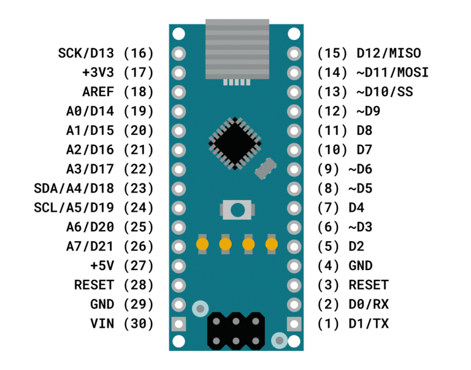

Carte Arduino
Arduino UNO R3
La carte Arduino Uno est basée sur un ATMega328 cadencé à 16 MHz. C'est la plus simple et la plus économique carte à microcontrôleur d'Arduino. Des connecteurs situés sur les bords extérieurs du circuit imprimé permettent d'enficher une série de modules complémentaires.


Interfaces :
- 14 broches d'E/S dont 6 PWM
- 6 entrées analogiques 10 bits
- Intensité par E/S: 40 mA
Arduino Nano
La carte Arduino Nano est basée sur un ATMega328 cadencé à 16 MHz. Sa mémoire de 32 kB et son grand nombre d'E/S font de ce circuit compatible DIL30 un élément idéal pour les systèmes embarqués ou pour des applications robotiques nécessitant du multitâches.


Interfaces :
- 14 broches d'E/S dont 6 PWM
- 8 entrées analogiques 10 bits
- bus série, I2C et SPI